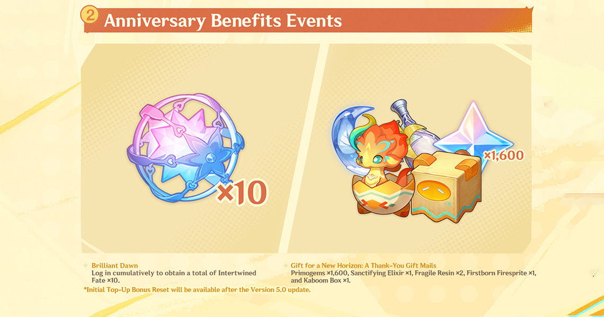

By: Rafi Andara Nasution

Setelah diumumkan pada 16 Agustus lalu, Genshin Impact kini sudah resmi memasuki update versi 5.0. Sebenarnya update ini
sudah bisa dirasakan sejak 3 hari lalu (28/08), tapi untuk Anda yang bisa bermain game di akhir pekan, inilah saatnya memasuki dunia baru di Genshin Impact update terbaru ini.
Petualangan baru di Natlan telah dibuka, dan kami menyambut para pemain pemula dan menengah untuk bergabung. Setelah menyelesaikan semua Quest Archon di bangsa pertama, Mondstadt, pemain dapat langsung membuka Teleport Waypoint untuk mengunjungi Natlan.
Selain itu, pemain yang telah mencapai Rank Adventure Lv. 28 dan menyelesaikan semua Quest Archon Liyue juga dapat langsung memulai Quest Archon Natlan.
Dengan bangsa Natlan kini terbuka, pemain dapat menikmati pengalaman bermain benar-benar baru. Setelah menyelesaikan Quest Archon Mondstadt, pintu menuju map baru di Genshin Impact ini akan terbuka lebar.
Pemain bisa menjelajahi wilayah ini dengan menggunakan kelincahan dan keterampilan unik para pejuang dan naga setempat, menghadirkan cara bermain belum pernah ada di game Hoyoverse sebelumnya.
Natlan menghadirkan pengalaman menjelajah yang benar-benar baru dengan bertransformasi menjadi Saurian Natlan.Setiap jenis Saurian memiliki kemampuan eksplorasi yang unik untuk menavigasi berbagai medan di Natlan.
Tepetlisaurus ahli dalam menggali ke bawah tanah dan
bergerak di dinding tebing; Yumkasaurus dapat menarik diri ke arah yang diinginkan dan dengan mudah mencapai ketinggian tinggi;
sedangkan Koholasaurus mampu bergerak dengan cepat di air dan juga di atas Phlogiston cair.
tiga Karakter baru yang dapat dimainkan di Natlan, Mualani, Kinich, dan Kachina, juga meningkatkan pengalaman bermain dengan mobilitas mereka yang lebih tinggi. Mualani adalah Karakter 5 Bintang pengguna Catalyst berelemen Hydro. Mualani dapat menaiki Sharky Surfboard untuk berselancar di atas berbagai perairan dan permukaan serta menggigit musuhnya.
<>Kinich adalah seorang Karakter 5 Bintang pengguna Claymore berelemen Dendro. Dia dapat menggunakan tali pengait untuk berayun ke tempat tinggi atau mengaitkan musuhnya
untuk melancarkan Loop Shot yang kuat.
Sebagai Karakter 4 Bintang pengguna Polearm berelemen Geo, Kachina dapat menaiki Turbo Twirly untuk bertempur dan memanjat tebing dengan mudah. Dalam Event Permohonan Versi 5.0, Mualani dan Kachina akan hadir untuk pertama kalinya bersama dengan kembalinya Kaedehara Kazuha di paruh awal, sementara Kinich akan hadir bersama Raiden Shogun di Event Permohonan paruh akhir versi ini.
<>Versi 5.0 juga hadir bertepatan dengan anniversary keempat Genshin Impact, yang datang dengan membawa berbagai hadiah serta pengoptimalan sistem untuk para pemain. Pemain dapat mengundang satu Karakter 5 Bintang secara gratis dari Permohonan Standar, mendapatkan hingga 10 Intertwined Fate dari event log in harian, mendapatkan 1.600 Primogem, serta dua Peralatan eksklusif melalui pesan dalam game. Versi terbaru ini juga akan membawa perubahan untuk Event Permohonan Karakter dan Event Permohonan Senjata,serta memperkenalkan sebuah item baru yang memungkinkan pemain untuk mendapatkan Artefak dengan stats pilihan sendiri.
